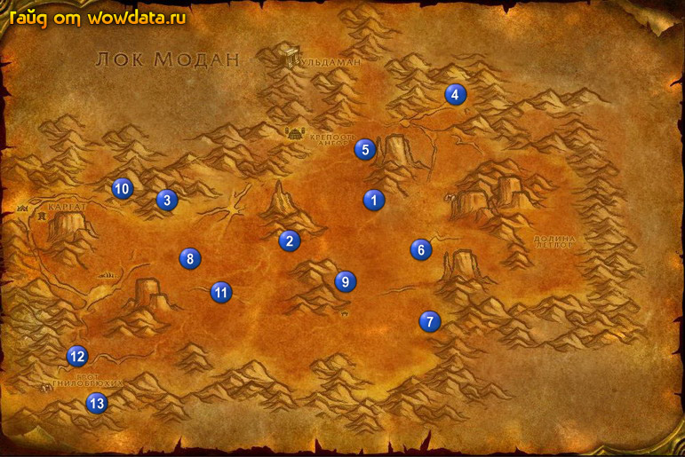

1) Пройдите в небольшой лагерь 1 (54, 44) и начните <Чары яркого пламени>,
<Миражи> и <Дворф и его инструменты>.
2) Идите закончите <Мартек Изгой> 2 (42, 52) и начните <Индарилий>.
3) Начните <Жареные крылышки канюка> и <В поисках жемчуга>.
4) Теперь убивайте конюков всякий раз когда увидите на эти 2 квеста.
5) Пройдите к следующим нпц 3 (25, 44), где начните <Изучение стихий: Камень> и <Охлаждение горячих голов>, затем закончите этот квест и начните <Гиро...чего?>, и его тоже закончите.
6) Начните <Жидкий камень> и закончите его.
7) Идите откройте ящик 4 (66, 21) для <Миражи>.
8) Следуйте к раскопкам 5 (53, 29) и бейте там дварфов для <Дворф и его инструменты>, с правой стороны 5 (53, 33) возьмите письмо под навесом и начните <Предвестник надежды>.
9) Идите наверх 1 (53, 43) и закончите <Миражи>, начните <Помогите кто чем может!>.
10) Также закончите <Дворф и его инструменты> и <Предвестник надежды>, начните следующую часть в Ульдаман.
11) Идите вниз 6 (61, 54) и начните <Дрожь земли>, огры появляются 7 (62, 70) и ходят до 8 (29, 56), убейте их как только увидите.
12) Идите на юг 7 (62, 70) и начните бить огров тут для <Помогите кто чем может!>, а заодно ждите боса тут (пункт выше).
13) Идите закончите <Найти Эгмонда> - труп дварфа 9 (50, 62) и начните <Мурдалок>.
14) Пройдите южнее в лагерь гноллов и делайте <Мурдалок> и <Индарилий>.
15) Идите наверх 2 (42, 52), закончите <Жареные крылышки канюка> и <Индарилий>, начните
<Новости для Физзла>.
16) Идите бейте Младший каменный элементаль 10 (18, 41) для <Изучение стихий: Камень> и <За реактивами в Бесплодные земли> <З >.
17) Идите закончите <Изучение стихий: Камень> 3 (26, 44), начните <Изучение стихий: Камень> и делайте его убивая обычных Каменный элементаль.
18) Вернитесь обратно 3 (26, 44) и закончите <Изучение стихий: Камень>, начните <Изучение стихий: Камень>.
19) Идите бить каётов 11 (33, 62) для<За реактивами в Бесплодные земли>.
20) Идите вниз 12 (11, 77) и бейте огров для <Помогите кто чем может!>.
21) Бейте Большой каменный элементаль 13 (14, 88) для <Изучение стихий: Камень>.
22) Идите закончите <Изучение стихий: Камень> 3 (26, 44), начните <Сложная задача>, закончите его у соседнего NPC и начните <Сложная задача>, закончите его тут же у первого NPC и начните <Сложная задача>.
23) Убейте элементаря которого вызовет гном (он 45 лвл), затем закончите квест и вы получите [Изящный секундомер].
24) Идите закончите <Помогите кто чем может!> 1 (53, 43).
25) Идите закончите <Дрожь земли> 6 (61, 54), игнорируйте следующую часть.
26) Теперь идите бейте Обжигающий дракончик на востоке от сюда пока не найдете сердце для <Чары яркого пламени> и пока не станете 41 лвл.
27) По руне вернитесь в Телcамар.
28) В доме около гостиницы закончите <За реактивами в Бесплодные земли> и начните следующую часть для Ульдаман.
29) Бегите закончите <Мурдалок> и начните часть для Ульдаман, теперь у вас должно быть 25% на 42 лвл.
30) Летите в Штормград и начните там <В поисках Храма>.
31) Летите в Сумеречный лес и сделайте его своим домом, бегите в Болто Печали.